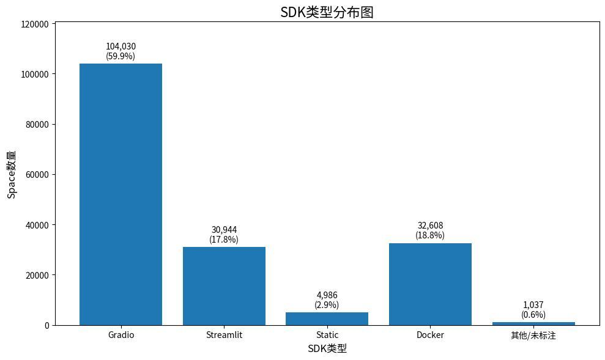

GRADUATION THESIS · WORK IN PROGRESS
开源平台协作网络结构对人工智能应用创新绩效的影响研究
Hugging Face Spaces 的经验证据
进行中 · 初稿阶段毕业论文 · 持续推进与修订
研究 AI 应用项目如何通过开发者协作连接彼此，以及这种网络位置与应用表现之间的关系。围绕数据关联、网络构建与计量分析开展研究，目前已有初稿和初步实证结果，仍在推进完善。
173,605初稿中的有效 Space 样本
2024HFCommunity 数据版本
Python / NetworkX初稿记载的网络构建与指标计算
研究框架
下图呈现研究设定与拟检验路径，箭头不代表已确认的因果关系。
NETWORK POSITION协作网络位置Space 为节点
共享贡献者形成连边
以度中心性衡量连接广度
共享贡献者形成连边
以度中心性衡量连接广度
MECHANISMS TO EXAMINE交流与迭代机制社区交流活跃度
项目迭代频率
同时考察网络位置的直接关联
项目迭代频率
同时考察网络位置的直接关联
OUTCOME PROXY应用创新绩效代理使用平台点赞指标
ln(1 + likes)
并非直接测量创新质量
ln(1 + likes)
并非直接测量创新质量
边界条件：模型／数据集丰富度。分析还纳入贡献者规模、项目年龄与 SDK 类型等控制因素。
从开发者行为到项目关系。同一开发者在两个 Space 中均有提交记录，就在两个项目间建立一条无向边。
连接的项目越多，度中心性越高。孤立项目也保留在网络中，避免只观察活跃连接而遗漏边缘项目。
度中心性 = 直接连接的其他项目数 ÷（网络项目总数 − 1）。
初稿样本构成
按 SDK 类型展示历史样本，图表直接取自论文初稿图 6-1。下列数字用于描述样本，不代表当前平台整体结构。

查看图表数据
| SDK 类型 | Space 数量 | 样本占比 |
|---|---|---|
| Gradio | 104,030 | 59.9% |
| Streamlit | 30,944 | 17.8% |
| Static | 4,986 | 2.9% |
| Docker | 32,608 | 18.8% |
| 其他／未标注 | 1,037 | 0.6% |
研究工作与方法
多表关联与分析样本构建
围绕 Space、repository、commits 等表组织项目与贡献者关系，关联讨论与资源引用信息，为项目层面的变量构建提供基础。
社会网络分析
以共享贡献者构建 Space 协作网络，使用 Python / NetworkX 计算度中心性，再将网络指标合并回项目层面数据。
计量分析与结果复核
初稿已包含基准回归、中介与调节效应分析，以及稳健性和 SDK 分组分析。相关结果仍需随研究推进进一步核对与完善。
目前进展
根据所提供初稿整理；研究尚未完成，不以进度百分比或定稿成果呈现。
- 问题与框架初稿已有研究问题、文献综述与假设设定
- 数据与网络初稿已有变量定义、网络构建与样本统计
- 初步实证已形成回归与补充分析的初稿内容
- 持续推进后续完善指标口径、复核结果并修订论文
研究说明：初稿使用历史截面数据，当前分析不能直接解释为因果证据。点赞数是代理指标，资源引用与部分分组数据亦有覆盖限制，相关解释仍在完善。